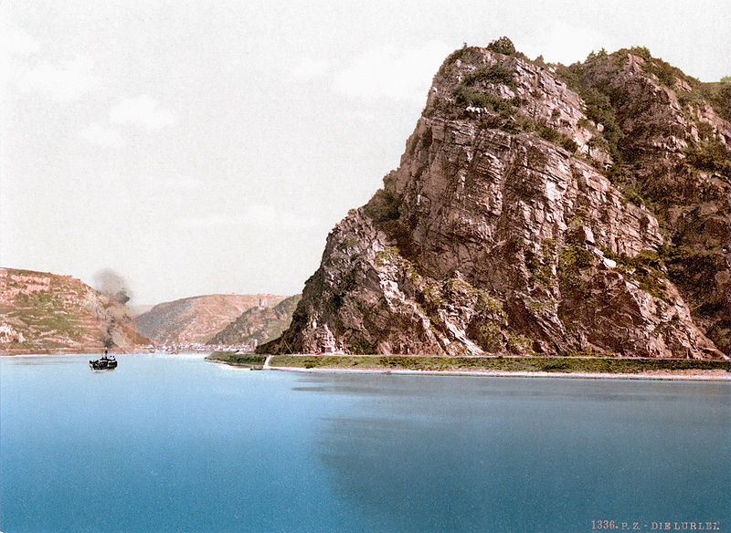
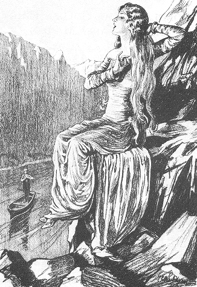

|
General Info
The Lorelei (also spelled Loreley) is a rock on the eastern bank of the Rhine near St. Goarshausen, Germany, which soars some 120 metres above the waterline. It marks the narrowest part of the river between Switzerland and the North Sea. A very strong current and rocks below the waterline have caused many boat accidents there.Lorelei is also the name of a feminine water spirit, similar to mermaids or Rhine maidens, associated with this rock in popular folklore and in works of music, art and literature. |
 |
|
legend and Poem
In 1801 German author Clemens Brentano composed his ballad Zu Bacharach am
Rheine as part of a fragmentary continuation of his novel Godwi oder Das
steinerne Bild der Mutter. It first told the story of an enchanting female
associated with the rock. In the poem, the beautiful Lorelei, betrayed by
her sweetheart, is accused of bewitching men and causing their death. Rather
than sentence her to death, the bishop consigns her to a nunnery. On the
way thereto, accompanied by three knights, she comes to the Lorelei rock.
She asks permission to climb it and view the Rhine once again. She does so
and falls to her death; the rock still retained an echo of her name afterwards.
Brentano had taken inspiration from Ovid and the Echo myth.
|
 |
If you would like even more info then we have you can go Here